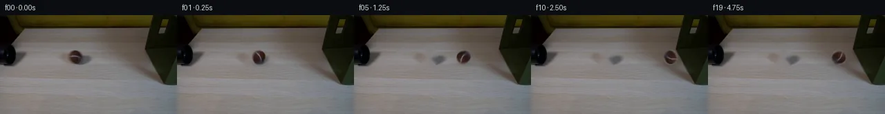

![首帧]()

Round 00
2026-11-05T10:39:04.216070+00:00像素候选变化代码 +212/−0inspection 更新
pixels 41c7429048e26bcc · code 80582aa918860638
查看本轮 generate.py 真实 diff
--- previous/generate.py +++ current/generate.py @@ -0,0 +1,212 @@ +#!/usr/bin/env python3 +"""Generate the 20-frame PixelWorld-Text continuation using local pixel operations.""" + +from pathlib import Path + +import cv2 +import numpy as np +from PIL import Image, ImageDraw + +import artifact_io + + +ROOT = Path(__file__).resolve().parent +W, H = 256, 144 +BALL_CX, BALL_CY = 109, 61 + + +def feathered_ellipse(height, width, cx, cy, rx, ry, feather=1.0): + """Return a soft analytic ellipse mask.""" + yy, xx = np.mgrid[:height, :width].astype(np.float32) + # Approximate the signed distance in pixels around the ellipse rim. + radial = np.sqrt(((xx - cx) / rx) ** 2 + ((yy - cy) / ry) ** 2) + edge = max(feather / min(rx, ry), 1e-4) + return np.clip((1.0 + edge - radial) / (2.0 * edge), 0.0, 1.0) + + +def reconstruct_background(source): + """Remove the observed ball and replace it with nearby tabletop texture.""" + mask = np.zeros((H, W), np.uint8) + # This includes the ball's dark rim and its tight original contact shadow. + cv2.ellipse(mask, (BALL_CX, BALL_CY + 1), (13, 12), 0, 0, 360, 255, -1) + restored = cv2.inpaint(source, mask, 4.0, cv2.INPAINT_TELEA) + + # Reintroduce a small amount of real neighboring high-frequency table grain + # so the inpainted disk is not unnaturally smooth. + smooth = cv2.GaussianBlur(source, (0, 0), 2.2).astype(np.float32) + high = source.astype(np.float32) - smooth + donor = np.roll(high, 27, axis=1) # sample the local surface 27 px to the left + soft = cv2.GaussianBlur(mask.astype(np.float32) / 255.0, (0, 0), 2.0)[..., None] + restored = np.clip(restored.astype(np.float32) + donor * soft * 0.30, 0, 255) + return np.rint(restored).astype(np.uint8) + + +def extract_ball(source): + """Extract a compact photographed ball sprite and analytic soft matte.""" + radius = 14 + patch = source[ + BALL_CY - radius : BALL_CY + radius + 1, + BALL_CX - radius : BALL_CX + radius + 1, + ].copy() + size = 2 * radius + 1 + alpha = feathered_ellipse(size, size, radius, radius, 10.4, 10.7, 1.15) + + # The ball is brown and dark; reject bright tabletop pixels inside the + # analytic edge while retaining the fuzzy, irregular photographed rim. + rgb = patch.astype(np.float32) + chroma_brown = np.clip((rgb[..., 0] - rgb[..., 2] + 13.0) / 22.0, 0.25, 1.0) + luminance_gate = np.clip((112.0 - rgb.mean(axis=2)) / 48.0, 0.35, 1.0) + alpha *= np.maximum(chroma_brown, luminance_gate) + alpha = cv2.GaussianBlur(alpha.astype(np.float32), (0, 0), 0.35) + return patch, np.clip(alpha, 0.0, 1.0) + + +def dent_box(frame, amount): + """Apply a subtle localized horizontal displacement to the fabric edge.""" + if amount <= 0: + return frame + yy, xx = np.mgrid[:H, :W].astype(np.float32) + vertical = np.exp(-0.5 * ((yy - 61.0) / 10.5) ** 2) + # Gate the warp to the right-hand box region and leave the table untouched. + gate = np.clip((xx - 207.0) / 8.0, 0.0, 1.0) + displacement = amount * vertical * gate + map_x = xx - displacement + map_y = yy + return cv2.remap(frame, map_x, map_y, cv2.INTER_LINEAR, borderMode=cv2.BORDER_REFLECT_101) + + +def add_shadow(frame, cx, cy, strength=1.0, scale_x=1.0): + """Composite a soft, low-opacity contact shadow on the tabletop.""" + yy, xx = np.mgrid[:H, :W].astype(np.float32) + rx, ry = 9.5 * scale_x, 3.1 + shadow = np.exp( + -0.5 * (((xx - (cx + 1.5)) / rx) ** 2 + ((yy - (cy + 8.2)) / ry) ** 2) + ) + shadow *= 0.28 * strength + shadow = cv2.GaussianBlur(shadow, (0, 0), 1.2)[..., None] + shadow_color = np.array([43.0, 35.0, 30.0], np.float32) … diff truncated; 125 more lines …